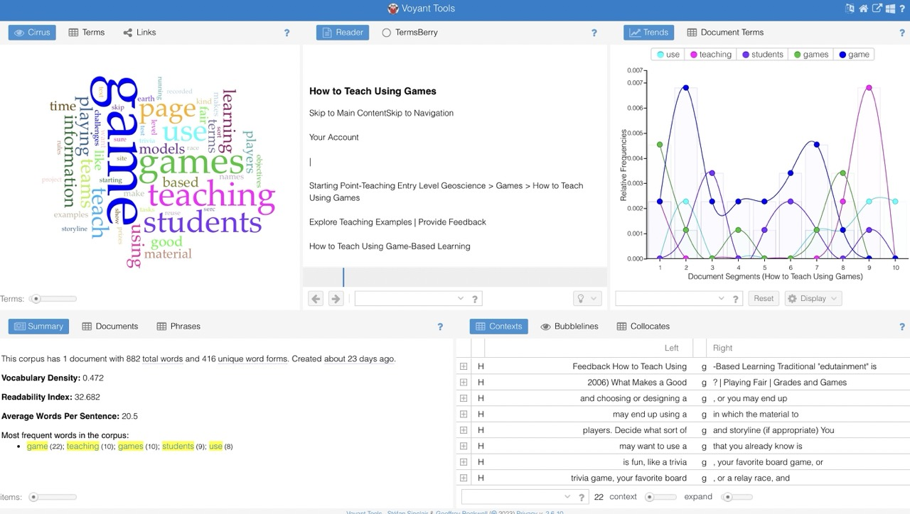
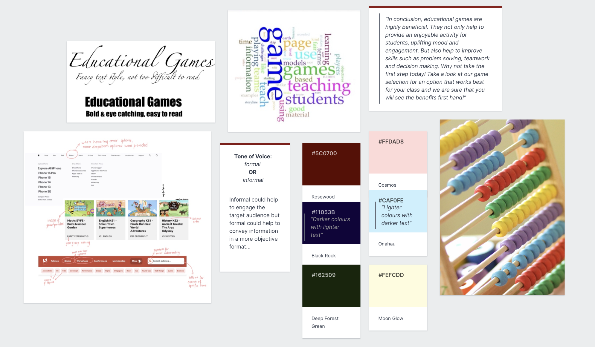

Lab 5
Independent Learning
Task 1/2
Accuracy: Is the text accurate, authoritative and any arguments backed by evidence?
There are quite a few references included in the text, showing that points are backed up by research evidence.
Active voice: is it used correctly or excessively?
This website uses an active voice correctly. Some examples include:
- What do you want the students to learn?
- Should the students play individually or in teams?
The active voice is not used excessively.
Bias: any biases and stereotypes evident in the text?
The text avoids gender and age bias as it always refers generally to ‘the students’. This avoids mentioning what gender they might be, and also
doesn’t single out a specific age group by mentioning a specific year group of students.
Clarity: jargon and technical terminology defined?
There is no technical terminology in the text that needs to be defined. Everything is kept at an understandable level.
Conciseness: is the text concise?
The text is concise. Each subheading is bold, with short bits of text underneath them and usually a short bullet point list.
Conversational and smoothly flowing prose: are contractions used? Does the text have sentences with a conversational tone?
The text is quite simple and contractions such as “it’s” are used. The text does use quite a conversational tone but doesn’t start sentences with
conjunctions.
Correctness: is the grammar correct?
The grammar of the text is correct.
Parallelism: is this included in the text?
The text includes some examples of parallelism such as – ‘Are the students playing prospectors, paleontologists, or explorers?’
Positive voice: Is the text quite positive or does it use words with negative connotations?
The text is overall positive and doesn’t use many words with negative connotations.
The only sentence I think could be improved is ‘While running a game, the major concerns will be to prevent cheating and, sometimes, especially with
a physical game, to enforce safety issues.’ I think this could be improved to say that safety is a priority instead of referring to it as a major concern
as this sounds more negative.
Strong nouns and verbs: are adverbs/adjectives overused?
The adverbs and adjectives in the text are not overused.
Sentence variety: do sentences vary in length? Are different sentence starters used?
A lot of different sentence starters are used in the text. In some of the bullet lists, sentence starters are repeated such as a bullet list with three
sentences starting with ‘are’. The sentences in the text are quite varied in length, it includes longer sentences broken up with commas and also includes
medium and short sentences.
Simple words: are recognisable words used?
Recognisable words are used. The text is understandable and not convoluted to read or understand.
Shorter paragraphs: are short paragraphs used?
All paragraphs in the text are short. Some shorter than 6 lines. The paragraphs are also broken up a lot with the bullet point lists.
Tone and voice: What is the tone of the text? Is this appropriate for the target audience?
The tone of the text is more informal which I consider appropriate for the target audience in this case. This is because the text is directed towards
teachers, but a lot of it is to make them think more about implementing games in their lessons.
Task 3
The AWE Writing Process Reflection:
At this stage in the term I have defined my audience to a good level. After considering both teachers and game developers, I have chosen to target my website
towards teachers. I have made user personas and stories to consider things such as age, education level, gender and language proficiency. All of this helps
for me to further plan how the text in the website should be written and presented.
I have also considered the purpose of the site by using my user stories to help me think about what the target audience would want.
The purpose of my site is to be both informing to help teachers learn more about educational games but also persuasive to convince them that these games
are beneficial for students.
I haven’t conducted any research such as interviews or data gathering. The only research I have conducted so far is reading research papers about the topic.
I think a good next step would be to get in touch with people in the target audience to conduct things like interviews. This would further help me develop
the website by speaking to people in my audience and asking what they think of this idea and if there is anything they would like to be included.
I don’t feel I have engaged with the write or edit steps of the AWE process yet as I haven’t written any content for the website yet. Despite this, I do
at this point feel quite comfortable to discuss my chosen topic. I think I need to conduct more research before I would be able to write about the topic
in a way that could be presented to the target audience.
Labwork
Task 1

The word cloud shows that in this section of text the most commonly used words include:
game, games, teaching and students.
So we can see that this text is definitely focused on games and teaching.
Looking at the trends tab in the top right of the image, we can see that 'game' features a lot at the beginning of the text,
and 'teaching' is the focus near the end of the text. This would imply that at the beginning of the text, it is more focused on
introducing games and nearer of the end of the text, then talks more about teaching and potentially how these games can be
used alongside teaching.
From my analysis of both professional writing characteristics and voyant, we can see that this website uses text very effectively to convey their point.
I found voyant as a helpful tool to identify the key themes in the text. I can see from a voyant analysis that the focus begins on games and when
concluding, the text focuses more on linking this to teaching. By analysing the professional writing characteristics, I can see that the text is concise, uses an
active voice and makes sure to include references. These are all features of writing that I would like to include in my own website.
Task 2
Sample Text
Opening statement draft:
Have you ever used educational games in your lessons?
This website presents evidence and reasoning for why you should. Don't worry if you are unsure of how to implement games in lessons, we will help
to provide support for this as well! You can also view a selection of games for different subject areas and levels. Whether it's maths, science or english
there's a game to help make it fun for your students.
Key argument:
Educational games are a brilliant way to help engage students. It offers something different than traditional learning while still helping them to improve
things like their knowledge in a subject area. Educational games have also been proven to help students improve their skills. They can inspire team work
and teach children good technical skills.
Sample conclusion:
In conclusion, educational games are highly beneficial. They not only help to provide an enjoyable activity for students, uplifting mood and engagement.
But also help to improve skills such as problem solving, teamwork and decision making. Why not take the first step today! Take a look at our game selection
for an option that works best for your class and we are sure that you will see the benefits first hand!
Analysis
I think my sample text is quite concise. It also doesn't contain any biases.
The key argument could be more conversational, this might be a better way to engage the reader.
All of the paragraphs are quite small. This should help to keep the reader engaged.
I think more research should be included for things like the key points to help convince my audience of the point I am trying to make. This would help
to make sure the text is accurate and backed by evidence.
I also think it would be good to experiment with the tone of voice.
In these paragraphs I have used quite a informational tone as I believe this would be more engaging for my target audience. This is because I believe a
formal tone wouldn't help to engage teachers in the context of educational games. Despite this, I think it would be good to write a sample of text in a
formal tone to see what it's like. I could then gather some feedback from my target audience to see what they find both more informative and engaging.
I haven't included any parallelism in my sample text, this would be good to add in sections when delivering strong points in my key arguments.
Task 3
Moodboard:

Image from Pixabay(free use) -
Image link